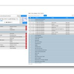
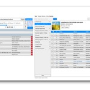
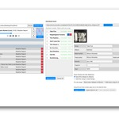
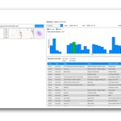
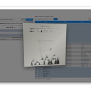

{
"UUID": "381c2408-75b4-41bf-97de-0b60161a25b0",
"Title": "GLAP-R",
"ShortDescription": "Local-first MP3 library and radio player for macOS.",
"Year": 2026,
"FeaturedWork": "TRUE",
"URL": "glap-r",
"Modality": [
"Digital"
],
"Medium": [
"App",
"MacOS"
],
"Tools": [
"HTML/CSS",
"Rust"
],
"Object": [
"App"
],
"Collaborators": [],
"Keywords": [
"Culture",
"Self"
]
}GLAP-R (Greg's Local Audio Player and Radio) is a macOS app for listening to your own MP3 collection and internet radio in one place. Like any music player, it allows you to browse and search your music, build playlists and queues, edit tags and artwork, save radio stations, and track what you’ve listened to.
Choose a folder and GLAP-R indexes its MP3s without moving/reorganizing them. It stores your music catalog and listening history in local SQLite databases, so it can load your library quickly and track your listening over time.
| * | Title | Size (bytes) | View |
|---|---|---|---|
 | GLAP-R library | 100,110 | |
 | View and edit playlists | 129,152 | |
 | Download albums | 103,644 | |
 | Track your listening history | 83,068 | |
 | Album art display | 70,192 |